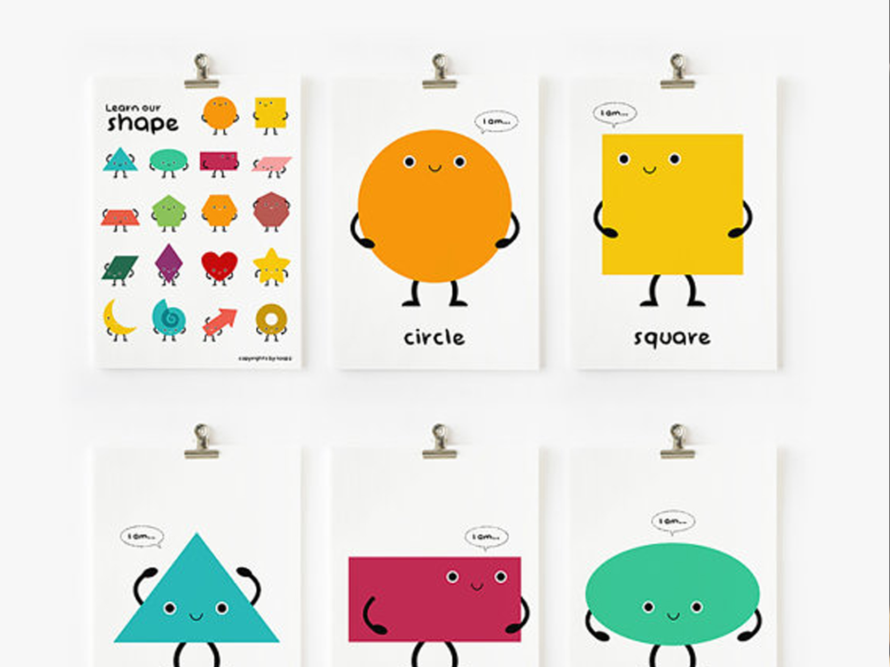

<div class="cbp-l-member-img">
	
</div>
<div class="cbp-l-member-info">
	<div class="cbp-l-member-name">Competition of words</div>
	<div class="cbp-l-member-position"></div>
	<div class="cbp-l-member-desc">
		Eloquence always has sayings on our presentations even when the topic and content are boring. Therefore, QTNers regularly take part in Competition of words where their oratory is raised and developed.	</div>
</div>
